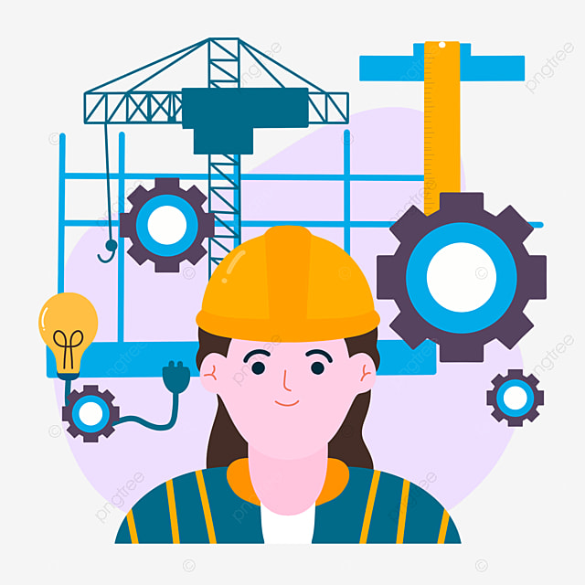

Ingeniera Industrial
Como ingeniera industrial, he aplicado una metodología para analizar procesos. Realicé análisis detallados, optimizando procesos a través de BPMN y decisiones basadas en datos. Investigué profundamente a nuestros clientes, ofreciendo soluciones a medida. Lideré la implementación de herramientas lean y propuse mejoras bajo estándares ISO 9001 y STPS, impulsando la eficiencia y satisfacción del cliente. Automatizé contactos y analicé datos para anticipar eventos futuros, integrando temas de interés desde 2021. Establecí una base de datos y organización documental eficiente para una gestión efectiva de la información de eventos. Además, atraje talento destacado y conferencistas prometedores.
- Mapeo de Procesos
- Atención al Cliente
- Análisis de Datos
- Herramientas Lean
- ISO 9001
Habilidades
Frontend Developer

Como desarrolladora frontend, tengo una pasión innata por crear experiencias digitales cautivadoras y funcionales. Mi enfoque se basa en la armonía entre diseño y funcionalidad, utilizando tecnologías de vanguardia como HTML5, CSS3 y JavaScript moderno.
Siempre busco la optimización del rendimiento y la accesibilidad para garantizar una experiencia excepcional para todos los usuarios.
Estoy emocionada por desafíos que requieren creatividad y habilidades técnicas, y estoy comprometida a mantenerme al día con las últimas tendencias y tecnologías del mundo del frontend.
Desde mis primeros pasos en el desarrollo web, quedé cautivada por la capacidad de transformar ideas en interfaces interactivas. La mezcla de creatividad y lógica en el frontend me atrapó de inmediato. Cada proyecto es una oportunidad para fusionar diseño y código, creando experiencias memorables.
Backend Developer

Como desarrolladora backend con experiencia en tecnologías como Spring Boot, MySQL y Java, mi enfoque radica en construir sistemas robustos y escalables. Spring Boot proporciona un entorno ágil y eficiente para desarrollar aplicaciones Java, permitiendo una rápida implementación y configuración de servicios.
Mi destreza en MySQL abarca desde el diseño de bases de datos hasta consultas complejas y optimización de rendimiento. Manejo eficazmente relaciones entre tablas y estructuras de datos complejas, garantizando la integridad y disponibilidad de la información.
La programación en Java es mi fuerte, permitiendo una gestión precisa de lógica de negocio y operaciones complejas. Me enfoco en escribir código limpio y modular, siguiendo las mejores prácticas y patrones de diseño para asegurar mantenibilidad y extensibilidad a largo plazo.